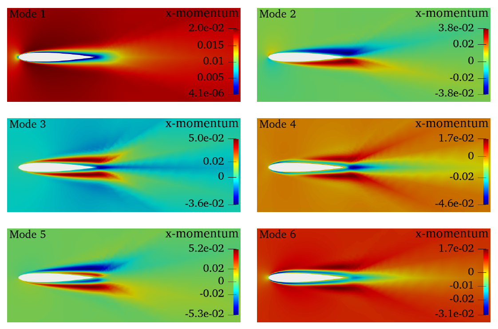
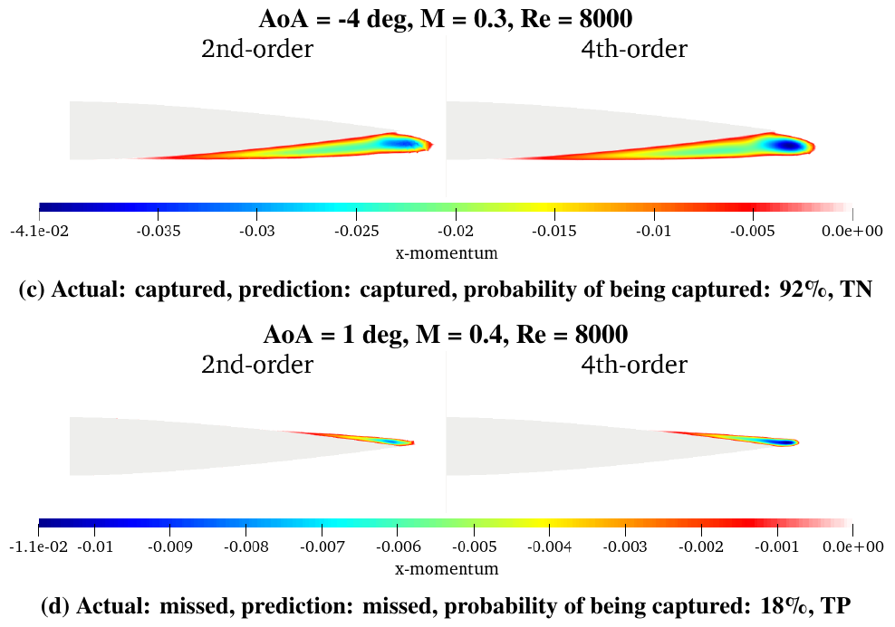
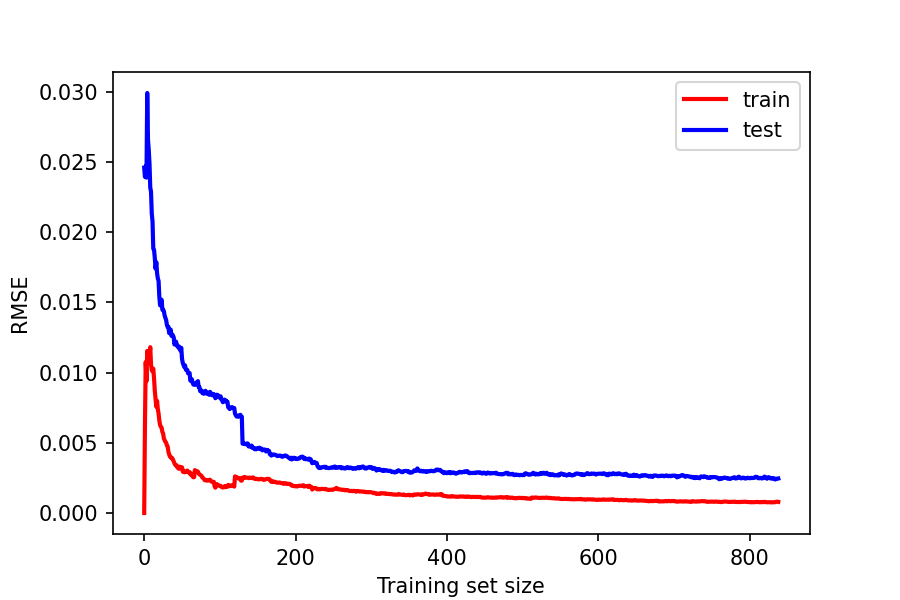
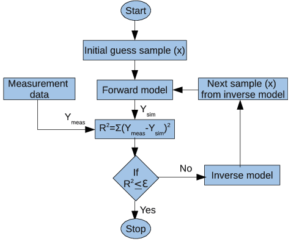

Principal Component Analysis of Aerodynamic Data

Data obtained from Computational Fluid Dynamics (CFD) are considerably high-dimensional. We can have many cells
in the computational domain, resulting in thousands or even millions degrees of freedom. These data sets cannot
be analyzed directly, and we need to reduce the complexity of the data set. This task is done by dimensionality
reduction techniques, one of which is the Principal Component Analysis (PCA). In this project, we've gathered
nearly a thousand canonical simulations around a NACA 0012 airfoil in different flow conditions, and performed
PCA on the obtained data set. It is found that PCA substantially reduces the dimensionality of CFD data and
gives us a low-order subspace prepared for machine learning. This projects constructs the basis on which the
following two projects (ML classification and ML regression) are developed. Our data set is publicly available
in the following GitHub repository.
Link to the GitHub repository: (will be availbale soon)
Supervised Machine Learning Classification to Detect Missing Separation Bubble

Numerical simulations are always associated with different types of error that deviate those from reality.
In Computational Fluid Dynamics (CFD), the presence of these errors could cause the simulation to miss
major flow patterns in the domain. Capturing these flow features is of utmost importance in aerospace as
they substantially affect the main aerodynamic parameters such as lift and drag. In this project, a machine
learning classifier was developed to detect whether a flow simulation around a NACA 0012 airfoil misses the
separation bubble. Working directly with CFD solutions is impractical for learning algorithms, as they have
to operate in a very high-dimensional space of information. Hence, in this project we applied Principal
Component Analysis (PCA) on CFD data set to map it onto a lower-dimensional space of dominant modes. Then,
the results of PCA are passed to the intelligent model to predict whether we have a missing flow separation.
Supervised Machine Learning Regression to Estimate Error in Drag Coefficient

This work is directly linked to the previous work (Supervised Machine Learning Classification to Detect Missing
Separation Bubble). A result of missing a major flow feature in the simulation is the wrong prediction of an
important flow parameter. In the case of the airfoil and the missing separation, drag coefficient is prone to
be miscalculated by the simulation. Therefore, in addition to a machine learning model to identify simulations
where flow separation is being missed, we need another intelligent regressor to estimate the error in the
calculated drag coefficient. In this project, such a model is developed.
Inverse Heat Transfer to Estimate Unknown Boundary Condition

Most of the physical phenomena we see in the nature are governed by a type of Partial Differential Equation (PDE).
Normally, to solve these equations, we need some boundary and initial conditions. But what if one or more boundaty
conditions are unknown, and having access to those is infeasible? One example is the heat flux on the surface of
the space shuttle when entering the atmosphere. In these cases, PDEs cannot be solved directly, and an inverse
framework should be set up. In this method, sensors are placed in accessible points in the domain where some
output variables can be measured, and the boundary conditions are estimated based on these values. This project
presents an inverse heat transfer problem, where an unknown heat flux is estimated using Gradient Descent method
and Levenberg-Marquardt inverse algorithm. This process can be considered as a data-driven optimization, where the
unknown values are tuned based on some desired output values.